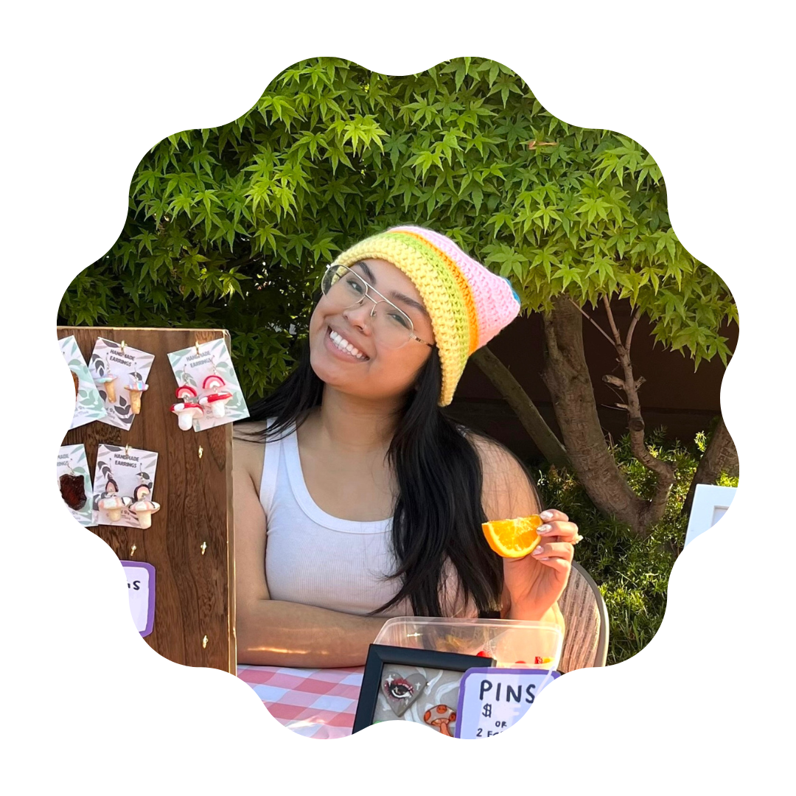

I was born and raised in sunny California and currently live in the heart of Silicon Valley. I possess an irresistible urge to sketch, have been an artist throughout my existence, and hold a deep appreciation for anything involving creativity.
My curiosity for the human and creative has led me to pursue a degree in Graphic Design from San Jose State University, deepening my understanding of the connection between human experience and visual communication. My Lao-American heritage has instilled in me the significance of diversity and serves as a wellspring of inspiration for my work. Through my experiences as an artistic entrepreneur, I've come to understand that human connection underpins everything.
I take a bold, precise, and whimsical approach to design. My goal is to captivate, allure, and evoke emotions in individuals with my creations.
When I'm not designing you can find me selling work at a local art fair, drawing anything and everything, testing out a new recipe, gym-ing, or exploring the great outdoors.
